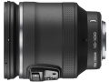

该镜头采用21片14组，含2片非球面镜片和3片ED镜片，以及1片HRI镜片的镜头结构。等效135画幅为27～270mm，最近拍摄距离为约0.3m，滤镜直径为72mm。采用金属卡口，配备VR减震功能，内置10倍电动变焦装置。
刚入了一个，全自动镜头，没有了对焦环和变焦环。正如楼上兄台所言，外观极为简练而又壮实。因为相对孔径本就不大，所以全开表现很好，细节锐利，色彩真实。上到J1机身后显得异常威猛，掌中小怪兽。
对焦快，变焦可快可慢，摄像时变焦有如丝般柔滑 全内，内变焦内对焦。这点非常难能可贵！对焦时毫无噪音。 伸缩镜筒不松旷，这点比佳能好，佳能不论是24-70 L还是18-200IS等等，伸缩镜筒必然松松垮垮。。。
该镜设计上为了缩小体积，每次开机镜筒就要伸出一段，关机缩回，浪费电力增加磨损。
独树一帜的好镜头
焦段实用 外形简练 防抖有效 成像细腻，清晰度较高，色彩艳丽。 畸变可接受 电动变焦杆手感极佳
镜头上唯一的镜头锁定开关，按习惯容易让人误解成防抖开关。